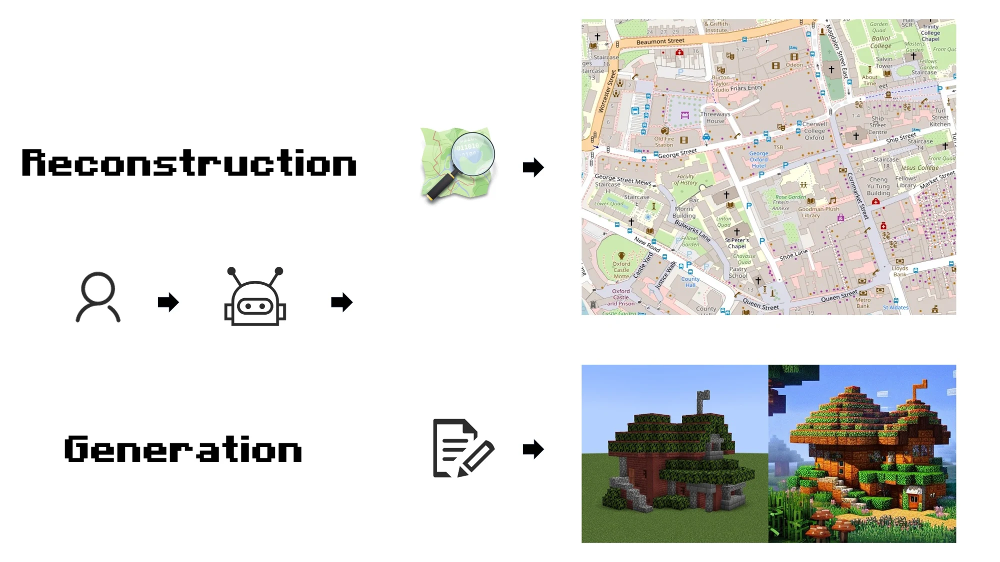
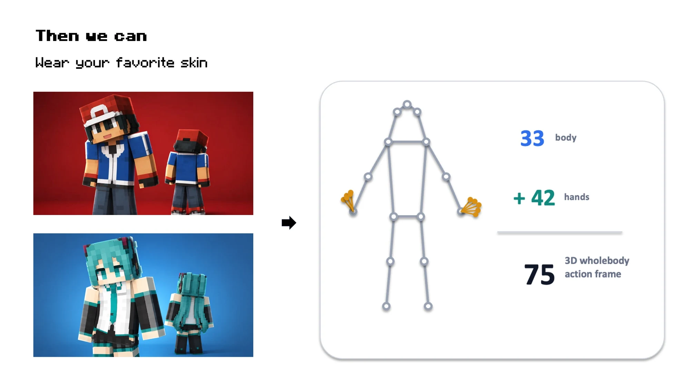

Creative tools & embodied play · 2026
Axis at WAIC
Minecraft scene creation, character skins and motion-based play.

Research question
How can content generation and physical interaction become part of one accessible creative workflow?
Approach
Axis coordinates text, image and 3D generation services with task state and a scene runtime. The WAIC demonstration brings together scene creation, character skin generation and camera-based motion interaction.
Current work
A working product and exhibition demonstration connecting creation with play. The platform is being extended beyond its initial Minecraft environment.
Collaborative product. My work focuses on the creation platform and its technical integration. The motion-recognition algorithms were developed primarily by teammates.



